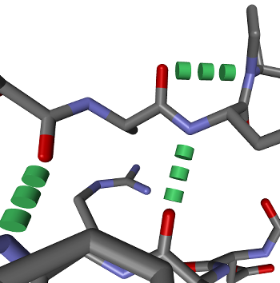
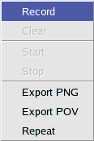
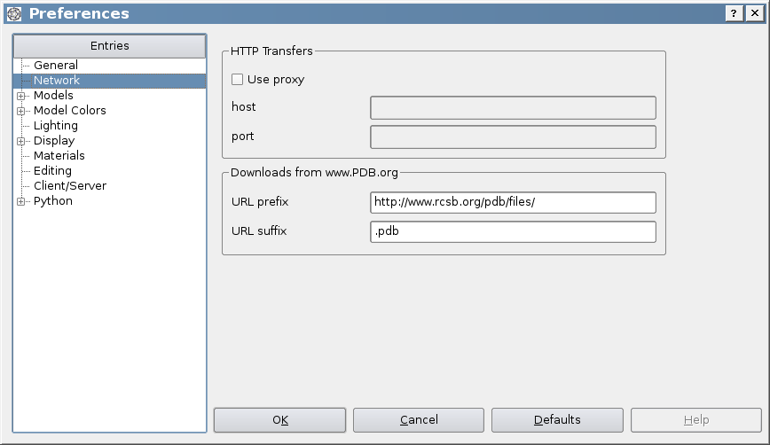

The documentation for BALLView was written in the HTML format, such that it either be
used online from the project's website or inside the program itself.
To obtain help for individual elements in the graphical user interface a special mode
was added. In the "Help" menu the entry "Whats this?" will switch into this mode and
transform the mouse cursor into a question mark. While the "Whats this?" mode is
active a left mouse click on any widget will open the corresponding help entry in the
documentation. (If no help entry for that widget exists nothing will happen.)
To leave the "Whats this?" mode just press the right mouse button or press the "Escape" key.
As an alternative for this approach the "F1" key will popup the documentation for
the current widget under the mouse cursor.
BALLView provides two different ways to view molecules in 3D: Stereo with shutter glasses and side-by-side stereo.
Both can be switched on in the menu entry "Display->Stereo".
When BALLView is running in a 3D Stereo mode, users can change the eye distance of the both viewpoints by
using the cursor keys left and right. Left decreases the eye distance and right increases it. The Shift-modifier
boosts the effect of the two keys. The optimal eye distance varies for every person and view, so it must be adjusted manually.
The amount of the eye distance can also be changed in the Preferences:

The focal distance seems to have no effect on most viewers, so its settings may be removed for future releases of BALLView.
Caveat: Since for 3D viewing two separate images have to be created for every camera movement, the 3D performance
can drop to half, while rotating or zooming the view. Consider buying a fast graphics accelerator card if you want use this feature.
Shutter glasses
To use shutter glasses with BALLView, you have to use a quad buffered graphics accelerator card.
This has up to now only been tested with a NVIDIA Quadro cards,
but should also work well e.g. with ATI Fire cards. If you make any experiences in this field with
BALLView, please let us know...
Side by side
For side by side stereo viewing the following hardware is needed:
- two projectors with the same brightness, which project to the exactly same spot
- polarization filters to fit on them
- special polarization glasses
- a silver coated canvas
But this form of stereo projection does not require a specific type of graphics accelerator cards.
Visualize hydrogen bonds
To visualize hydrogen bonds, BALLView first has to calculate their position. This can be done, by highlighting a
System and clicking on the menu entry "Tools->Calculate H-bonds" (ALT-N). Then a new Representation for them has
to be created, while using the model "H-Bonds". The result could look like:

Usage of the POV-RAY export
POV-Ray is an external rendering program which is freely available.
The POV-Ray files which were created by BALLView contain the command line, with which POV-Ray should be invoked to
render the image. This line could look like:
povray +Imy.pov +FN +Omy.pov.png +QR +W1037 +H922 -UV
To use antialiasing in POV-Ray, the flag "+A0.3" can be added.
Data provision for 3D printing
Printing service provider as
Rapid Object for example produce
syntheic or ceramic models out of proper data. The representation data has to be sent as a VRML
(with textures and colours)
or a .stl (just structure) file. Therefore BALLView can create VRML or .stl exports.
Important note: At the moment just representations consiting only of meshes (SES, SAS, Ribbon, Cartoon, Backbone) are printable.
Other representations can be exported but most enterprises will not be willing to print them as they contain cutting planes. Also all files with more than
one representation are not printable as the printer print one cohering block.
For the export of several representations which have to have the same scale after printing the VRML export contains two rows with
usefull information, as maximum and minimum X, Y, and Z values, the boxsize of a box the representation fits into and the volume of this
box, as this is the worstcase volume one has to pay for if printing. These lines are at the very end of the file.
Warning: All exports take very long (and in this time BALLView will not react or redraw its surface) so don't panic, just wait. (worstcase so far: 60 minutes)
VRML exports
stl exports
Another type of printing data format is stl. It is not very interessting as a colourless model is not really cheaper
than a coloured one. stl contains no primitives just meshes but the representations which are not prinable are the same as for VRML as the export takes
a very long time and creates huge amounts of data and therefore an intelligent export of the "Ball and Stick" representation for example would be infeasible.
Create animations
BALLView can create fly by animations from the Scene, either for creating on screen presentations or
for exporting images to create movies (see below).
This functionality is available through the menu entry "Display->Animations":
|  |
When a user presses the "Record" entry, BALLView stores the subsequent sequence of viewpoints in
the Scene, i.e. if a user moves the mouse, such that the viewpoint changes, this is recorded
and can be reproduced.
To start a recorded animation, use the "Start" entry.
The animation can be stopped at any time, by clicking "Stop".
The "Clear" entry allows for deleting the recorded sequence such that a new one can be recorded.
Please remember that you have to click again on "Record" to switch off the recording.
The last three entries allow to repeat the animation or export images either directly in the PNG format or through the POV-Ray renderer.
As an alternative, animations can also be created with Python scripts.
The examples folder contains several scripts which illustrate how this can be done.
|
Create movies from pictures
To combine a set of images to a movie on Linux or MacOS, we suggest the program
mencoder.
To create an AVI video with 25 frames per second from all PNG images in the current directory
with the
XviD codec and a bitrate of 1600 kbit/s invoke
mencoder "mf://*.png" -mf fps=25 -o out.avi -ovc xvid -xvidencopts pass=1:bitrate=1600
For Windows users, we recommend VirtualDub.
Usage of distance grids
You might wonder what a distance grid is good for (see menu entry "Tools->Distance Grid").
This entry creates a grid with the distance between every point in the grid to the center of
the molecule.
This grid can be used to color surfaces according to the distance of every triangle to the
center of the molecule, which can create nice coloring effects
(see also
here).
Quick save and quick load
BALLView offers quicksave and quickload functionality through entries in the main toolbar.
The state of the application and all loaded
molecular data and standard representations are stored in the project file ''quick.bvp'' in the users home directory. This can e.g. be used
for an undo operation.
Download PDB files
PDB files can be downloaded from the www.pdb.org servers using their PDB identifiers.
On some machines it might be necessary to enter the
data for the proxy configuration (see Preferences below).
It is also possible to use mirror sites.
